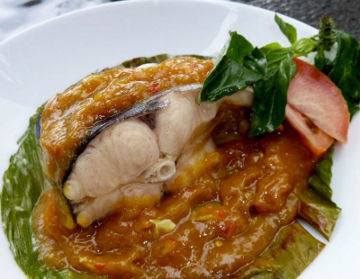

|  |
TINUTUAN
Tinutuan merupakan makanan khas Manado berupa bubur, biasanya dihidangkan untuk sarapan pagi dengan lauk tambahan berupa ikan cakalang atau tuna, perkedel, dan sambal dabu-dabu roa. Bubur Tinutuan yang sangat lezat ini mengandung beragam jenis sayur dan daging. Bubur Tinutuan yang disajikan bersama mi dinamakan midal.
SATE BULAYAK
Sate Bulayak adalah sate khas Nusa Tenggra Barat yang disajikan dengan bulayak atau lontong yang dibungkus dengan daun aren dan sambal yang mirip dengan bumbu kari. Sate Bulayak menggunakan daging sapi dan jeroannya sebagai bahan utama. Cara makan sate yang gurih dan lezat ini adalah dengan mencocol bulayak ke sambal kacangnya dan kemudian menggigit satenya.
NASI GANDUL
Nasi Gandul adalah makanan khas Pati, Jawa Tengah yang dihidangkan di atas daun pisang. Nasi berkuah ini biasanya disajikan dengan daging sapi ataupun bagian jeroan lain seperti paru dan hati sapi. Nasi Gandul sangat lezat, namun kandungan kolesterolnya cukup tinggi sehingga tidak disarankan untuk memakannya setiap hari.
TEMPOYAK
Wajib Dicoba Bagi penggemar durian, Tempoyak pasti akan mendapatkan tempat di hati. Masakan khas Sumatera, terutama daerah Jambi, Palembang, dan Lampung ini merupakan hasil fermentasi buah durian. Tempoyak yang juga populer di Malaysia ini biasanya disajikan sebagai lauk, dicampur dengan ikan pindang ataupun pepes ikan mas. Ditambah dengan sedikit sambal, rasa gurih dan asam Tempoyak pasti akan membuat ketagihan.